Biomes and places
A picture of each place, taken in a freshly made world. Underground pictures are shown in full light; in the game you need torches. Jump to: Ice islands · Forest · Orc island · Desert patches · Goblin outposts · Burned villages · Fishing village · Magma fortress · Magma realm · Island surface · Ocean · Caves · Moss caves · Gem caverns · Abandoned village · Enemy castles · Bandit camps · Wizard tower · Sky realm · Dragon mountain · Treasure island · Rock layers · Jade caves · Rose caves · Azure caves · Stalagmite caves · Root caverns · Fossil beds · Overgrown caverns.
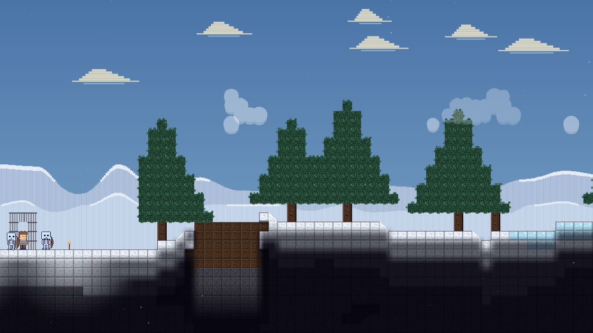
Ice islands
Snowy islands (two on large worlds) with frozen ponds, pine trees and small ice huts. Never any sand.
Creatures: Penguins, polar bears, frost archers and frost brutes
Resources and loot: Snow, ice, spruce wood, hut chests
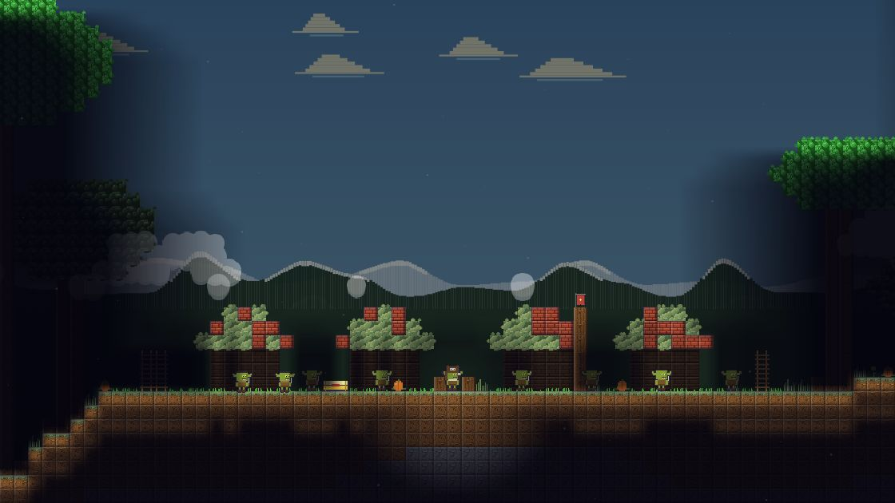
Forest
One wild island packed with jungle and dark oak trees. Deep inside is the goblin warcamp, with goblin huts and wooden lookouts at both ends.
Creatures: Goblins, goblin knifers and archers, the Goblin Beastmaster and his scarred bear
Resources and loot: Lots of wood, a gold chest, a captured villager
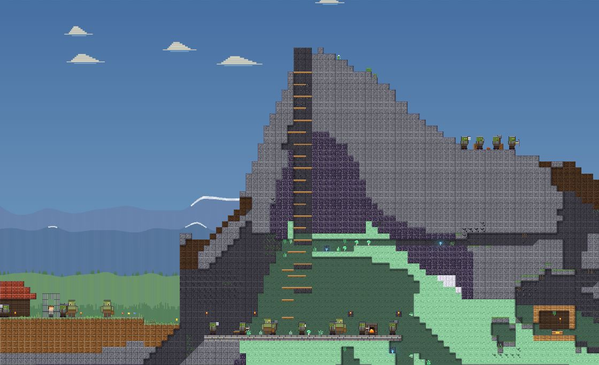
Orc island
Bare stone mountains with orc camps of every size, stone lookout towers and a cave base inside the tallest peak.
Creatures: Orcs, cutthroats, brutes, crossbowmen, ogres, Grukk the Ogre King
Resources and loot: The orc blast furnace (smelts mythril and adamantite), Grukk's treasure chest
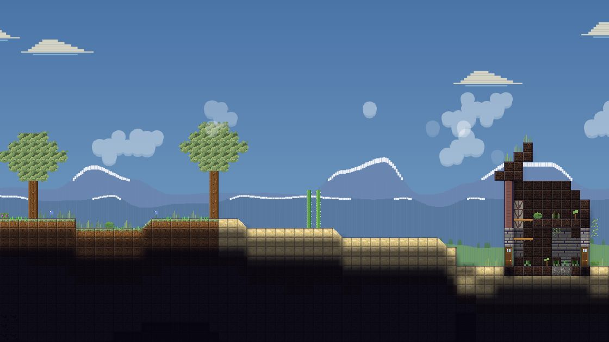
Desert patches
Sandy stretches on wild islands with cacti; never on ice, forest or orc islands.
Creatures: Night monsters
Resources and loot: Sand, cacti
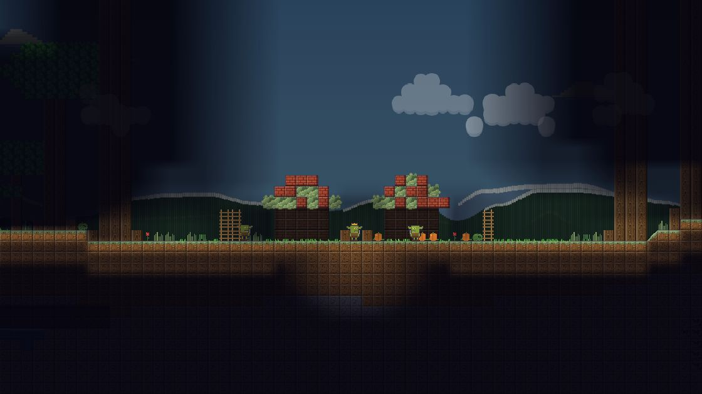
Goblin outposts
Small fenced camps with tents on wild islands.
Creatures: Goblins and the island's own creatures
Resources and loot: Coins, berries
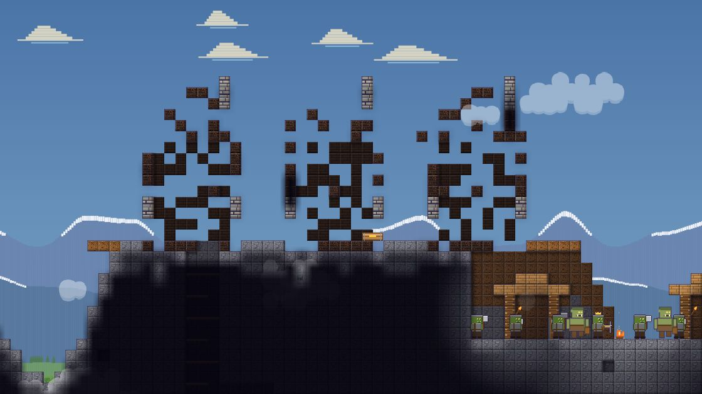
Burned villages
Three houses the fire took: roofs and upper corners burned away with ragged edges, charred wood and charred back walls, and grass, ferns and saplings growing through the ash. They cannot be claimed. Safe by day; at night fog rolls in.
Creatures: Ghosts at night; a ghoul every 2 to 5 nights
Resources and loot: A little chest loot (1 in 25 has a bottle of leaping); ghouls drop a rare weapon for your class
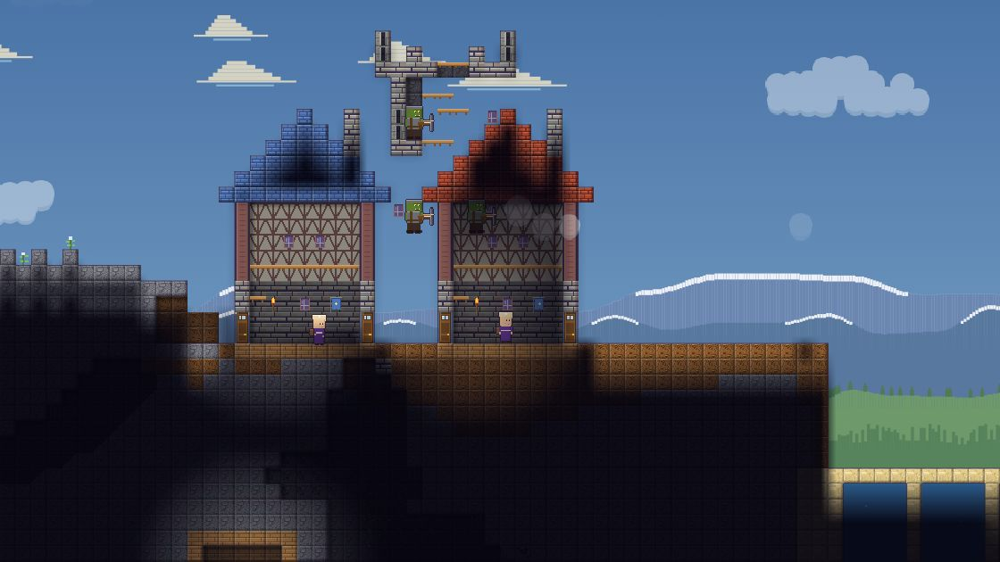
Fishing village
Huts on a coast with a long dock.
Creatures: Fishers (friendly)
Resources and loot: Rods and cooked fish; fishers buy your catch
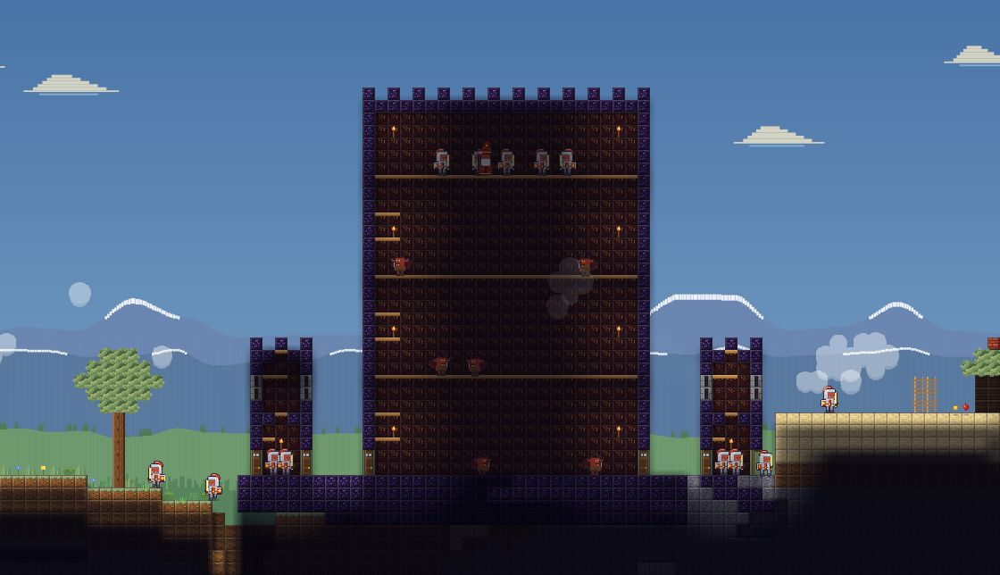
Magma fortress
An obsidian fortress on a wild island full of imps and magma knights.
Creatures: Imps, magma knights, the Magma Wizard
Resources and loot: Magma staff; the portal to the magma realm
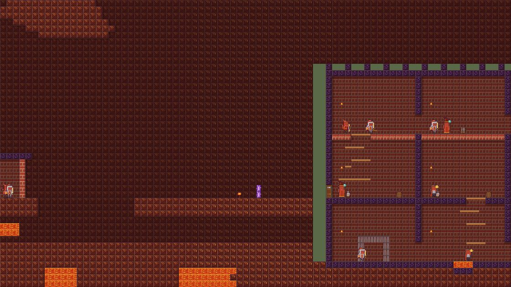
Magma realm
A sealed red cavern world at the bottom of the map, half the world wide (new worlds). Reached only through the fortress portal; dig up to leave.
Creatures: Magma knights, archers, wizards and macebearers, imps, the Magma Knight
Resources and loot: Gold chests, the magma blade, life and mana crystals; adamantite once both realm bosses fall
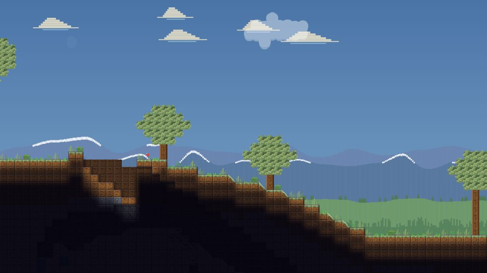
Island surface
Grassy islands with trees, flowers, tall grass, berry bushes and herbs. Beaches have palms; sugar cane grows by water.
Creatures: Birds, rabbits, deer, boars, bears, wolves, cows, sheep, beavers. At night zombies and skeletons; enemy raids (can be turned off).
Resources and loot: Wood, apples, meat, sand
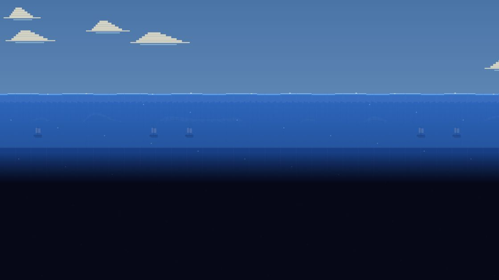
Ocean
Wide seas between islands, very deep; a second great ocean hides the Kraken.
Creatures: Sharks, jellyfish, piranha schools, eels, the Kraken
Resources and loot: Fish and sea treasure; bring a boat
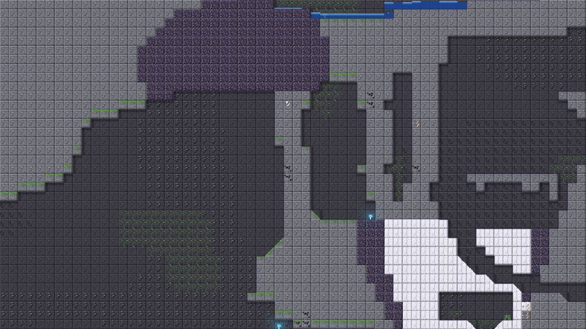
Caves
Tunnels and huge caverns with mushrooms, giant mushrooms, ferns, roots, rock islands, crystals, small underground huts and treasure chests.
Creatures: Skeletons, goblins, zombies, orcs, ogres; scouting parties
Resources and loot: Coal, silver, iron, gold, diamond, emerald, ruby, chests
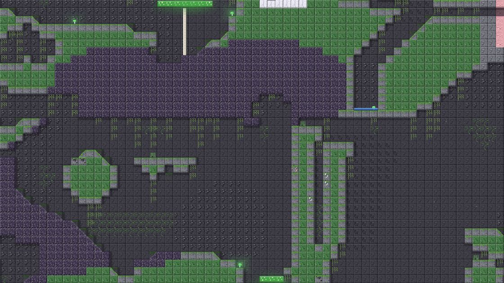
Moss caves
Damp green caverns with hanging moss.
Creatures: Mossy zombies, mossy skeletons, moss trolls
Resources and loot: Mossy stone, emeralds (rare drop)
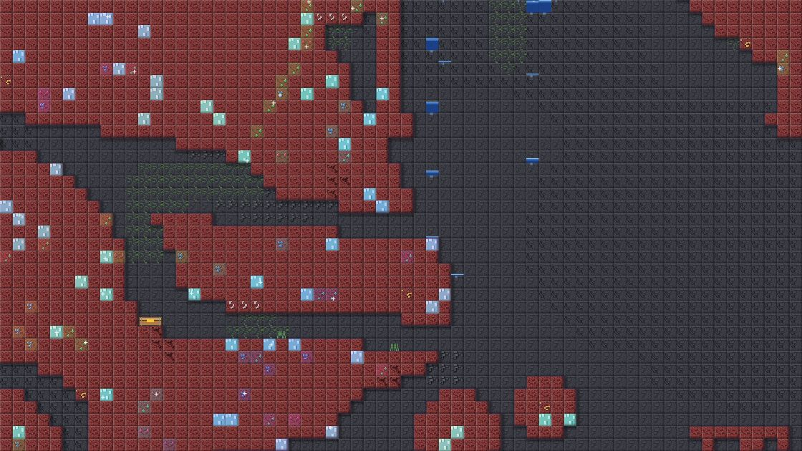
Gem caverns
Deep red caverns full of gems and glowing crystal.
Creatures: Crystal golems
Resources and loot: Crystal blocks, emeralds, sapphires, rubies, gold ore
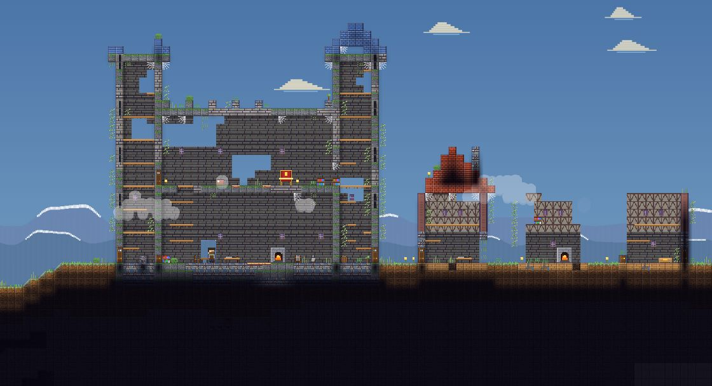
Abandoned village
Your future home: a two-storey castle and three houses left to the weather, with ragged gaps in the walls, moss on the stone, grass and saplings on the floors and ivy on the walls. The Quartermaster waits inside with 3 to 5 drifters. Talk to him to start the repairs; they take about a day.
Creatures: None (safe)
Resources and loot: Workbench, furnace, chest; hire soldiers and miners once it is rebuilt
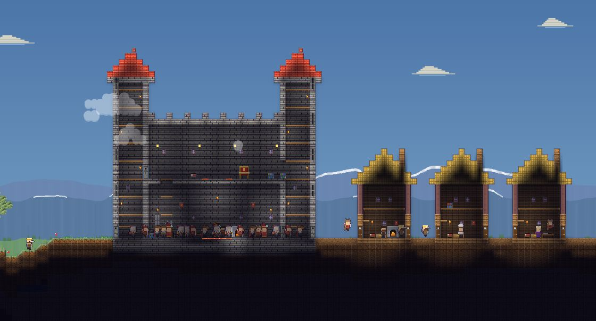
Enemy castles
Stone castles of the two rival factions, one west and one east of your home, each with a village, farms and watchtowers. They grow, expand to other islands and send war parties.
Creatures: Knights, archers, macebearers, wizards, beastmasters, a Warlord, workers
Resources and loot: Coins; a caged prisoner (freed when you conquer the castle); shops open after conquest
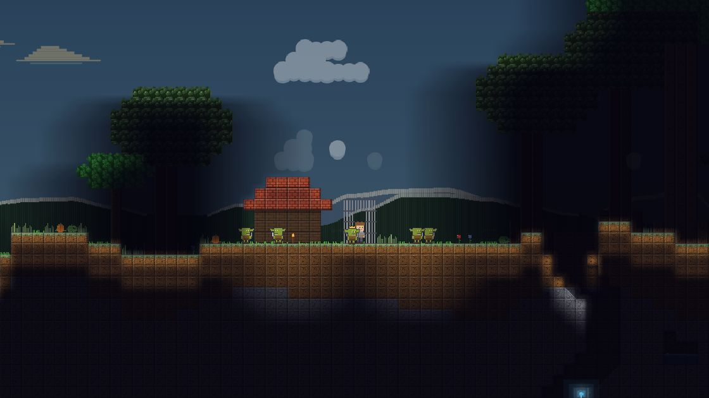
Bandit camps
One on each wild island, with a prisoner in a cage.
Creatures: The island's creatures
Resources and loot: A new soldier
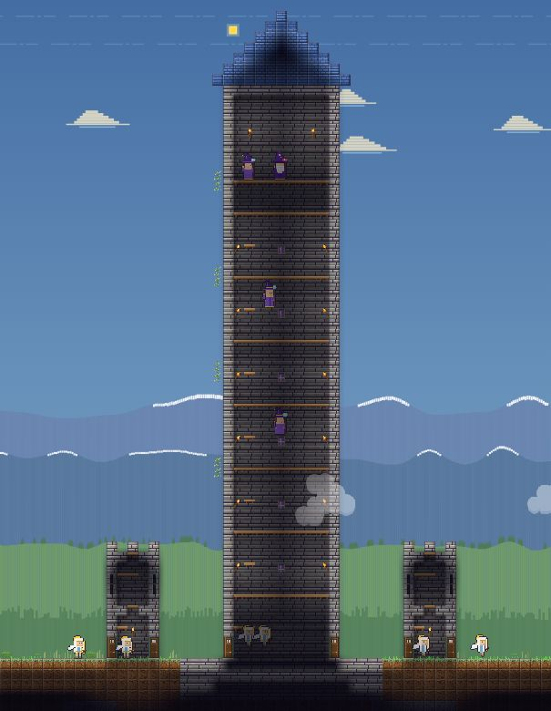
Wizard tower
A tall tower on a wild island. Mages guard each floor.
Creatures: Tower mages, sky knights, the Archmage
Resources and loot: Sky staff, arcane ring, mana crystal; the sky portal
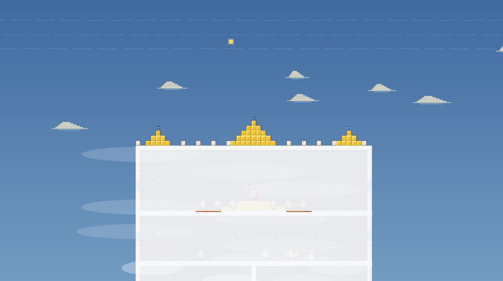
Sky realm
A quarter of the world wide, above a one-way barrier and reached through the tower portal. Cloud islands sit close together with stepping stones, temples, houses and towers; the Sky Ranger's huge castle sits at the far end.
Creatures: Sky knights, sky archers, sky wizards, sky macebearers, the Sky Ranger
Resources and loot: Sky chests (sealed until the Sky Ranger falls); mythril ore inside the clouds afterwards
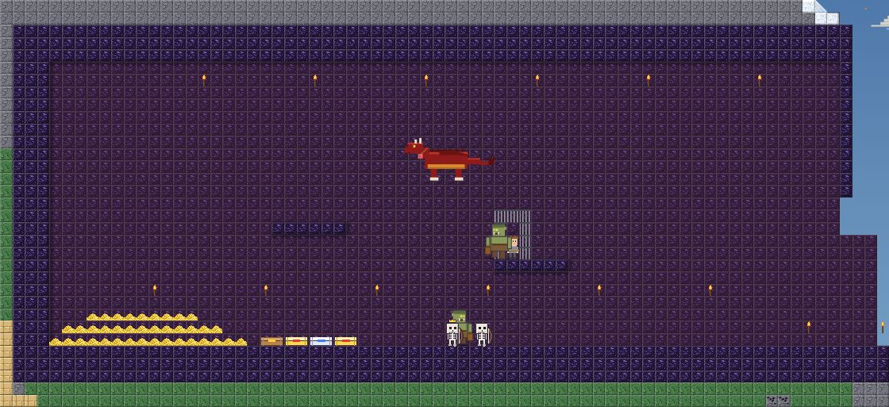
Dragon mountain
A snowy mountain at the world edge with a cave mouth near the summit.
Creatures: Vorthax the ember wyrm
Resources and loot: The dragon amulet, dragon gold and four chests
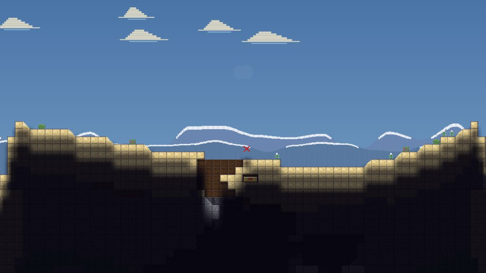
Treasure island
A small sand island at the far edge of the Kraken's sea, marked with a red X.
Creatures: -
Resources and loot: The Kraken's sunken treasure (sealed until the Kraken is slain)
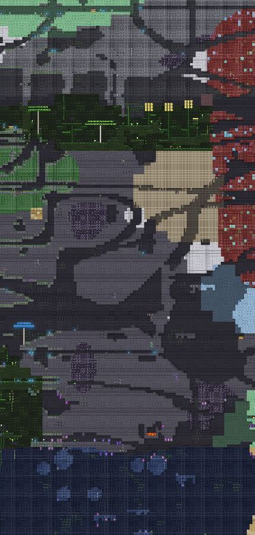
Rock layers
Under every island the rock comes in three layers: grey stone near the surface, layered purple-grey shale from about a third of the way down, and blue-grey deepstone from a little over halfway to the magma realm.
Creatures: Goblins, zombies, skeletons and orcs only in the top quarter of the underground; below that shale crawlers in the shale layer, deep stalkers in the deepstone layer, cave bats, and each biome's own creatures
Resources and loot: Stone, shale, deepstone; gear is only found in cave chests at or below the shale. Ore veins take on the colour of the rock they sit in, so an iron vein in jade stone is green-tinted iron flecks in jade
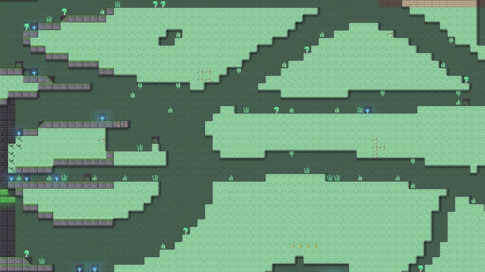
Jade caves
Pale green stone with glowing jade shards on the walls.
Creatures: Jade crabs (hard shells), jade mantises (lunge), cave bats
Resources and loot: Jade stone, jade shards, emeralds (rare drop); jade glowcaps and jade ferns glow on the floor
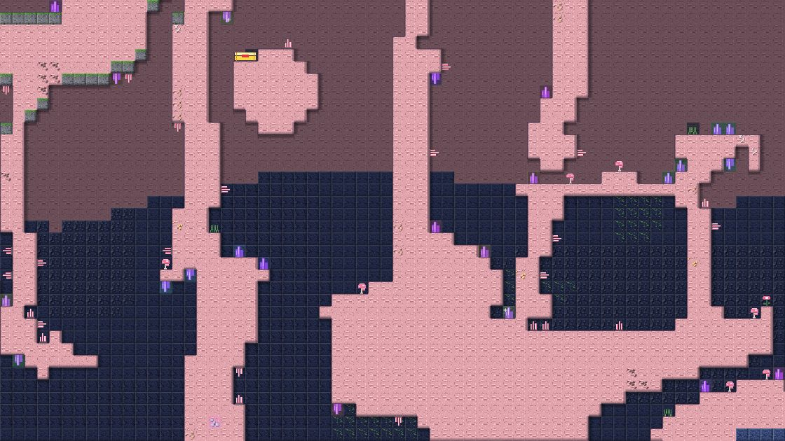
Rose caves
Pale red stone lit by rose quartz crystals.
Creatures: Rose wisps (fly and throw bolts), rose serpents (venom slows you), cave bats
Resources and loot: Rose stone, rose quartz; rose glowcaps and rose lilies
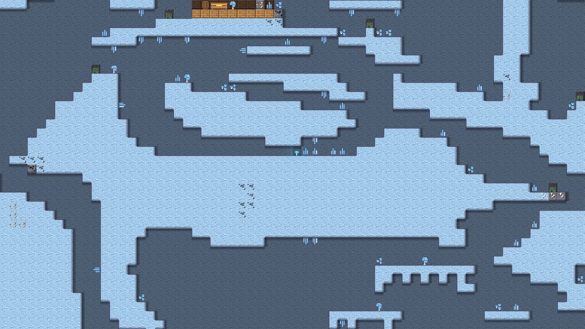
Azure caves
Pale blue stone with azure shards, found deeper down.
Creatures: Azure spiders (their bite slows you), cave bats
Resources and loot: Azure stone, azure shards, sapphires (rare drop); azure glowcaps and frost bells
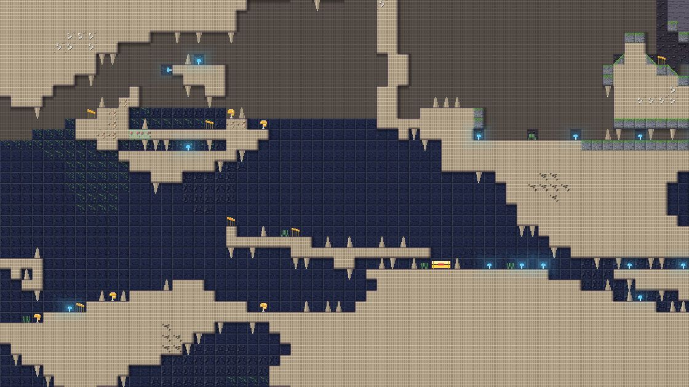
Stalagmite caves
Dripstone caverns with stalagmites rising from the floor and stalactites hanging from the roof.
Creatures: Swarms of cave bats, dripstone golems
Resources and loot: Dripstone, stalagmites, stalactites; amber glowcaps and amber reeds
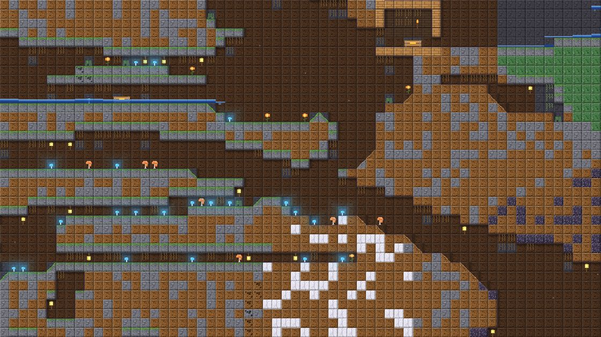
Root caverns
Earthy caves just under the islands, with hanging roots and glowing bulbs.
Creatures: Root wyrms, cave bats
Resources and loot: Dirt, roots, glow bulbs; ember glowcaps and lantern flowers
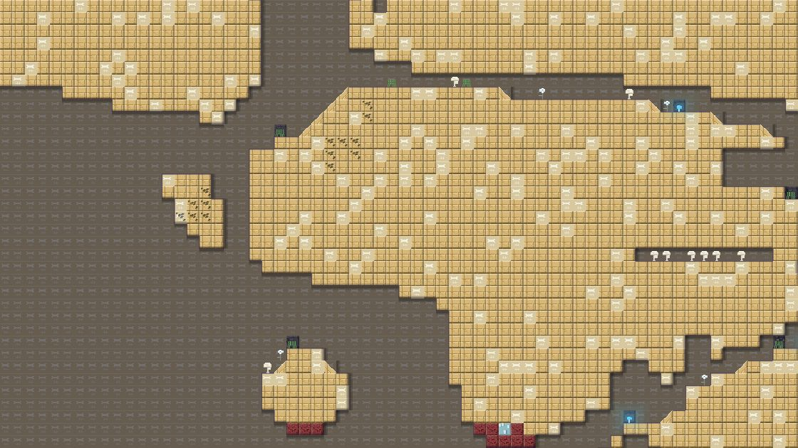
Fossil beds
Sandstone and fossil stone with old bones set in the rock.
Creatures: Fossil raptors (hunt in pairs and pounce), bone hounds (packs of three), cave bats
Resources and loot: Fossil stone, sandstone, bones; bone glowcaps and ghost orchids
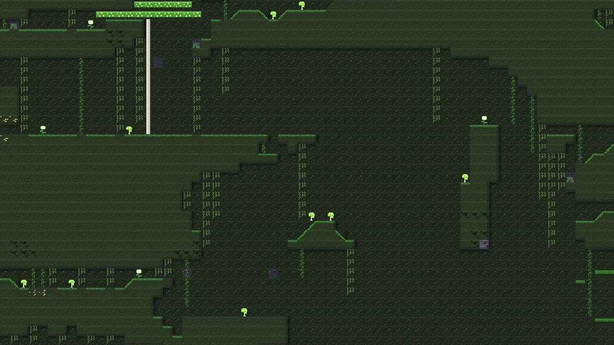
Overgrown caverns
Huge caverns in the middle (shale) layer, overgrown with giant glowcaps and giant ferns you can stand on, giant glowing blooms, hanging moss and glowmoss turf. The toughest creatures under the islands live here.
Creatures: Giant cave spiders (webbing bite), cave bears (enrage when hurt), thornback beetles (thorns), glow moths
Resources and loot: Overgrown loam, glowmoss turf, giant stalks, leaves and blooms, glow vines, verdant glowcaps and moon blooms; gold caches with better loot than other cave chests (crystals, gems, gold bars, more coins)